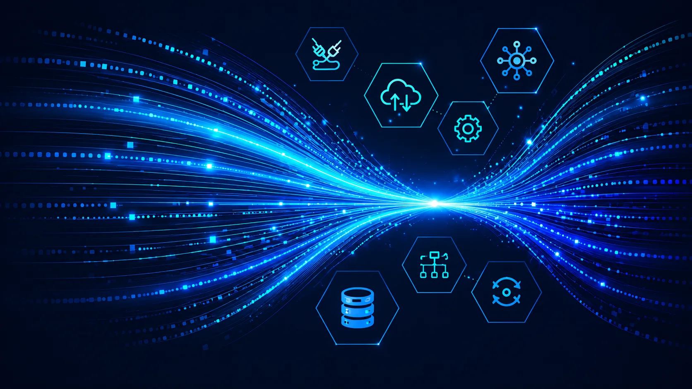
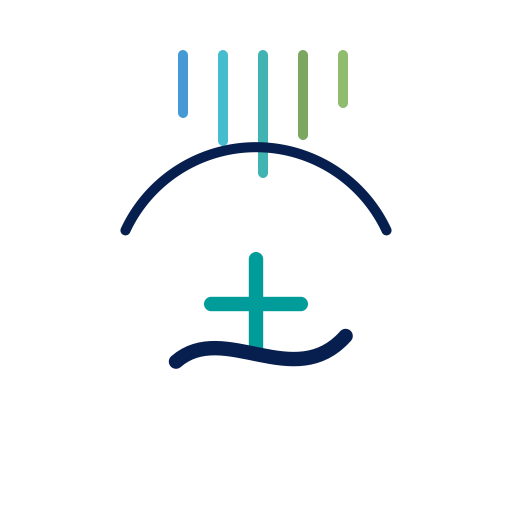
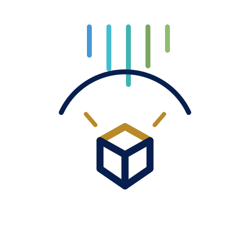
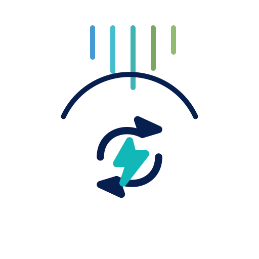
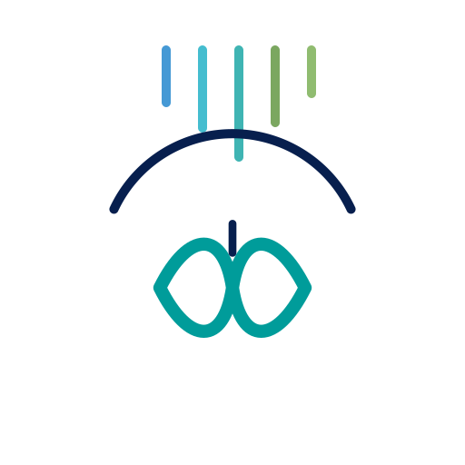
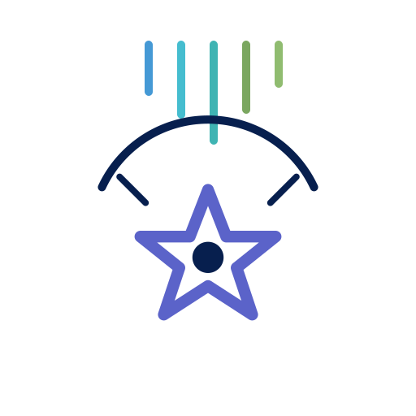

Operasi perniagaan
EastBridge Operion
Jalankan perniagaan, bukan kertas kerja.
Perkhidmatan tersediaSedia untuk integrasi mengikut skop dengan Zoho, SAP, Oracle, Microsoft 365, Salesforce dan platform pihak ketiga yang diluluskan.Portfolio berdisiplin yang membezakan perkhidmatan tersedia, perintis, pelan hala tuju dan konsep masa hadapan.

Portfolio house-of-brands yang memberi setiap keluarga penyelesaian tujuan dan tahap kematangan yang jelas.
Jalankan perniagaan, bukan kertas kerja.
Perkhidmatan tersediaSedia untuk integrasi mengikut skop dengan Zoho, SAP, Oracle, Microsoft 365, Salesforce dan platform pihak ketiga yang diluluskan.Asas bersambung untuk proses teras perniagaan.
Pelan hala tuju disahkanSedia untuk integrasi mengikut skop dengan Zoho, SAP, Oracle, Microsoft 365, Salesforce dan platform pihak ketiga yang diluluskan.Hubungan pelanggan, disiplin pipeline dan aliran kerja pertumbuhan.
Perintis / jangka terdekatSedia untuk integrasi mengikut skop dengan Zoho, SAP, Oracle, Microsoft 365, Salesforce dan platform pihak ketiga yang diluluskan.Corak integrasi untuk platform perusahaan dan sistem tersuai.
Perintis / jangka terdekatSedia untuk integrasi mengikut skop dengan Zoho, SAP, Oracle, Microsoft 365, Salesforce dan platform pihak ketiga yang diluluskan.Dashboard, isyarat data dan sokongan keputusan praktikal.
Perintis / jangka terdekatSedia untuk integrasi mengikut skop dengan Zoho, SAP, Oracle, Microsoft 365, Salesforce dan platform pihak ketiga yang diluluskan.Corak identiti, akses dan kawalan untuk sistem bersambung.
Perintis / jangka terdekatSedia untuk integrasi mengikut skop dengan Zoho, SAP, Oracle, Microsoft 365, Salesforce dan platform pihak ketiga yang diluluskan.Perjalanan pekerja, aliran kerja HR dan keterlihatan tenaga kerja.
Pelan hala tuju disahkanSedia untuk integrasi mengikut skop dengan Zoho, SAP, Oracle, Microsoft 365, Salesforce dan platform pihak ketiga yang diluluskan.Jejak pembelajaran, program academy dan bukti keupayaan.
Pelan hala tuju disahkanSedia untuk integrasi mengikut skop dengan Zoho, SAP, Oracle, Microsoft 365, Salesforce dan platform pihak ketiga yang diluluskan.
Konsep aliran kerja dan sokongan perkhidmatan kesihatan bertanggungjawab.
Pelan hala tuju disahkanSedia untuk integrasi mengikut skop dengan Zoho, SAP, Oracle, Microsoft 365, Salesforce dan platform pihak ketiga yang diluluskan.
Komponen boleh guna semula, corak integrasi dan pemecut penyampaian.
Pelan hala tuju disahkanSedia untuk integrasi mengikut skop dengan Zoho, SAP, Oracle, Microsoft 365, Salesforce dan platform pihak ketiga yang diluluskan.
Corak automasi operasi untuk tugas perniagaan berulang.
Perintis / jangka terdekatSedia untuk integrasi mengikut skop dengan Zoho, SAP, Oracle, Microsoft 365, Salesforce dan platform pihak ketiga yang diluluskan.Konsep perkhidmatan untuk risiko, kawalan, bukti dan tadbir urus.
Pelan hala tuju disahkanSedia untuk integrasi mengikut skop dengan Zoho, SAP, Oracle, Microsoft 365, Salesforce dan platform pihak ketiga yang diluluskan.
Sokongan berterusan, penerimaan dan penambahbaikan.
Perkhidmatan tersediaSedia untuk integrasi mengikut skop dengan Zoho, SAP, Oracle, Microsoft 365, Salesforce dan platform pihak ketiga yang diluluskan.
Permainan pendidikan, simulasi dan pengalaman interaktif.
Bidang kreatif masa hadapanSedia untuk integrasi mengikut skop dengan Zoho, SAP, Oracle, Microsoft 365, Salesforce dan platform pihak ketiga yang diluluskan.Lihat butiran →Penyelesaian boleh disambungkan melalui API yang diluluskan dan reka bentuk integrasi berskop. Kebolehlaksanaan bergantung pada lesen, akses API, keselamatan, kualiti data dan persekitaran pelanggan.
Perkhidmatan dan keupayaan yang boleh diskop serta disampaikan hari ini.
Pendekatan boleh guna semula yang sedang disahkan melalui engagement kecil.
Konsep yang memerlukan pengesahan pasaran, pelaburan dan sokongan operasi.
Idea eksplorasi tanpa komitmen tarikh pelancaran awam.
Setiap inisiatif mesti melalui gerbang nilai, kebolehlaksanaan, keselamatan, pemilikan dan komersialisasi.
Pelanggan dan nilai jelas.
Sahkan proses, data dan integrasi.
Ukur masa, kos, kualiti dan penggunaan.
Lengkapkan ujian, keselamatan dan pemilikan.
Kembangkan selepas bukti dan model hasil wujud.
EastBridge is building a disciplined research, product and intellectual-property capability around real customer problems.
Structured discovery, architecture, prototypes, pilots and reusable product capabilities.
Teroka R&D →Source-code governance, product ownership, trademarks, software rights and commercial evidence.
Teroka Inovasi Vietnam →Efficient architecture, proportionate AI, lifecycle discipline and transparent measurement.
Teroka teknologi hijau →Kongsikan proses, sistem dan keutamaan semasa anda. Kami akan mencadangkan langkah seterusnya yang terkawal, skop yang jelas dan laluan penyampaian yang realistik.